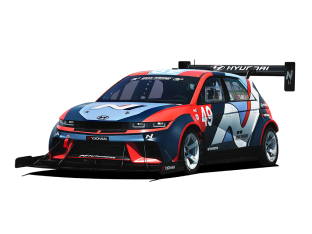
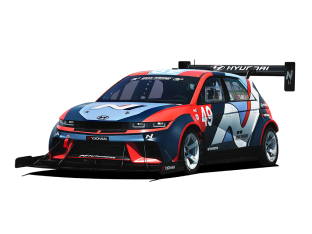

IONIQ 5 N
TA Spec
흔들림 없는 열정으로 선도하다
Overview
빛나는 수상,
아이오닉 5 N의 위력
아이오닉 5 N TA(Time Attack) Spec은 근본적인 차량 변경 없이 양산형 아이오닉 5 N의 강점을 부각하기 위해 설계되었습니다. 특히 표준 고성능 전력(PE) 시스템이 그대로 유지됩니다. 이 특수 장비 모델 2대와 아이오닉 5 N 양산 차량 2대는 2024년 6월 23일 미국 콜로라도에서 열리는 제102회 파이크스 피크 국제 힐클라임(PPIHC)에 출전합니다. 양산형 전기 SUV/크로스오버 및 개조형 전기 SUV/크로스오버 부문에서 기록 달성을 목표로, 아이오닉 5 N 2대와 아이오닉 5 N TA Spec 모델 2대가 구불구불한 코스를 따라 험난한 오르막 주행을 펼칩니다.
Performance
파이크스 피크 국제 힐클라임
주요 사실
12.42
(20)mi(km)
156Corners
14,115
(4,302)Ft(m)
계속되는
모터스포츠의 열정
파이크스 피크에 맞춰 차량을 개조하기 위해 새로운 충격 흡수 장치와 모터스포츠 사양의 브레이크를 장착했습니다. 특히 Yokohama와 공동 개발한 18인치 타이어, 고도의 다운포스 공기역학 패키지가 PPIHC용으로 설계되었습니다. 추가적인 안전 강화 장치로, Recaro Pro Racer SPA Hans 시트, Sabelt 6점식 Hans 안전 하네스, PPIHC 사양 롤케이지 및 EV 화재 진압 시스템이 포함됩니다.
Specification
IONIQ 5 N TA SPEC
제원
 

- PE 시스템
-
아이오닉 5 N PE 시스템의 양산형 사양
- 모터: 전면 175kW/후면 330 kW (합계: 505 kW,
687 PS)
- 배터리: 84.0kWh
- 인버터: 실리콘 카바이드 2단 인버터 - 충전 시스템
-
아이오닉5 N 충전 시스템의 양산형 사양
- 800V, 400V 멀티 충전 시스템
- 최대 충전 속도: 350 kW
- 충전 시간: 18분 내에 10~80%(최적의 조건에서) - 섀시
-
양방향 조절식 댐퍼 지상고 및
캠버 조절식 - 외형
-
PPIHC 전용 공기역학 패키지로 개조된
eN1 바디 - 휠
- 18인치 11J 단조 레이싱 휠
- 타이어
-
Yokohama와 함께 개발된
18인치 모터스포츠 슬릭 타이어 - 브레이크
-
전면
- 6피스톤 레이싱 캘리퍼, 레이싱 패드
후면
- 4피스톤 레이싱 캘리퍼, 레이싱 패드 - 안전 장치
-
안전 롤케이지(PPIHC 규정).
고전압 차단 스위치, 소화기
(반자동)
Related

The all-new IONIQ 5 N

IONIQ 5 N 2024 World Performance Car Award Winner

Mastering Japanese tracks, one drift at